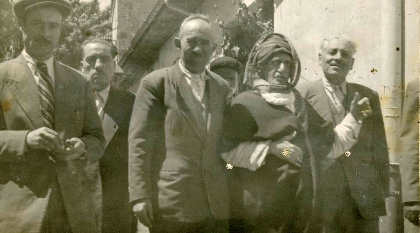
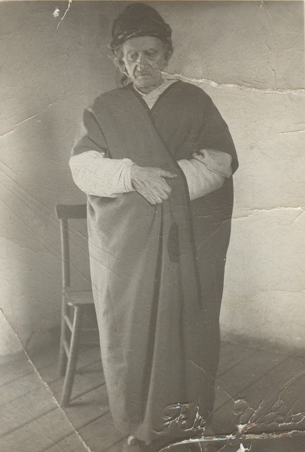
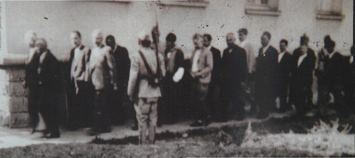
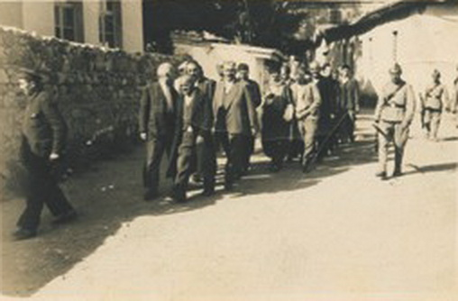
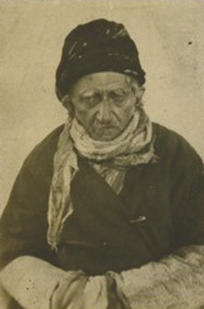
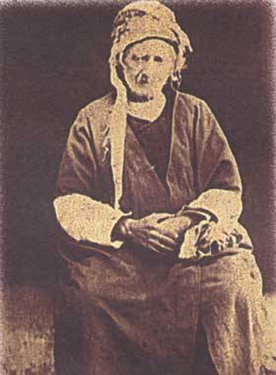
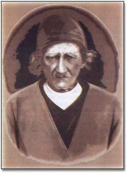
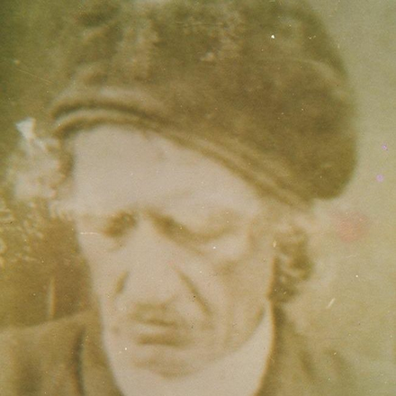
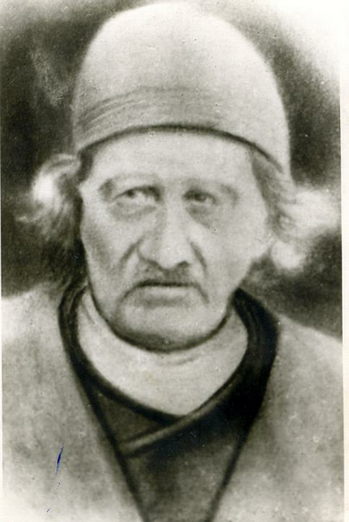
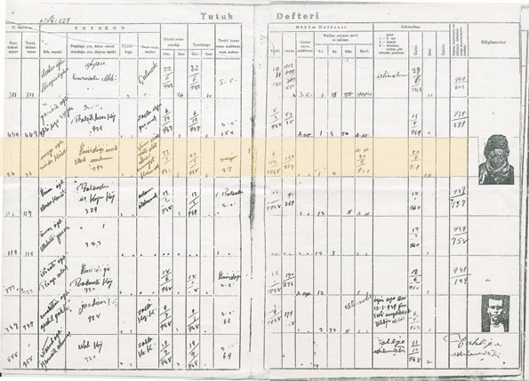

|
Afyon Hapsi [1948] |
  
|
|
Afyon Hapsi [1948] |
|
Afyon Hapsi [1948]

Bediüzzaman,1948 yýlýnda Afyon mahkeme yolunda.
Solunda Mehmed Çalýþkan,Süleyman Rüþtü Çakýn,saðda Osman Çalýþkan.
Þapkalý olan kiþi ise hafiyelikle görevli bir polis.

Afyon mahkemesi sýrasýnda çekilmiþ fotoðraf.
Üzerinde Mevlana Halid Baðdadi (K.S)'nin cübbesi var.

Üstad ve talebeleri mahkemeye götürülürken..

Üstad ve talebeleri Afyon mahkemesinden cezaevin götürülürken..

Kendisini henüz abdest almýþ, býyýklarý buz tutmuþ bir vaziyette gören
sevgili talebesi Zübeyir Gündüzalp'e "Beni öldüremeyecekler" demiþti Bediüzzaman.
Bir deðil, birkaç kiþiyi birden öldürecek kuvvetteki zehir,
yaþlý ve hasta bir vücuda, ýztýraptan baþka bir zarar veremedi.
Bediüzzaman'ýn Afyon hapsinde zehirlendikten sonra çekilmiþ bir fotoðrafý.

Zehirlendikten sonra çekilen bir fotoðrafý daha

Resmi makamlarca çekilen bir resmi

Üstadýn az bilinen bir fotoðrafý

Merhum Ali Uçar'ýn, Þerafeddin Kartal beye hediye ettiði,
Üstadýn bir fotoðrafý.

Bediüzzaman Said Nursi'nin Tutuk Defterindeki kaydý.
Suçu: Dinî hissiyatý âlet ederek cemiyet kurmak.
Ayný sayfada yer alan diðer tutuklularýn suçlarý ise;
Çalmak, zorla ýrza geçmek, adam öldürmek, zorla kýz kaçýrmak.